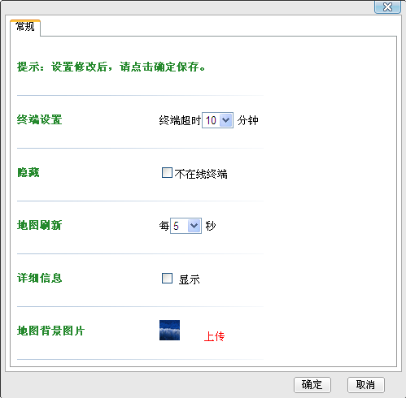

调度用户成功登录GIS系统后，点击菜单栏中的“参数设置”，弹出参数设置界面，用户可设置当终端上报超时多长时间不显示用户、地图刷新时间、是否显示详细信息以及上传地图背景图片，如下图所示。

参数设置
 参数说明
参数说明
| 参数名称 | 描述 | 类型 |
终端超时时间设置 |
该项可与“用户不显示”设置同时兼用，即终端超时多长时间不上报GPS时，在地图上将其隐藏 |
可选择终端超时5/10/15/30/60分钟；若不开启用户隐藏设置，则无论设置多长的终端超时时间，用户都不会隐藏 |
用户不显示设置 |
该项需与“终端超时”设置同时兼用，即终端超时指定时间不上报GPS时，在地图上将其隐藏 |
勾选则启用用户不显示设置，反之则不开启 |
地图刷新时间设置 |
按照设置的时间刷新地图 |
每1/2/3/5/10/30/60秒刷新一次地图 |
详细信息显示配置 |
是否在地图上显示用户的详细信息，比如该用户的名称和ISSI |
勾选则此时显示在地图上的用户上方会有该用户的详细信息显示；取消勾选，则详细信息显示将被关闭 |
地图背景图片 |
选择要上传的地图背景图片 |
格式：jpg，jpeg，gif，png，bmp；图片大小小于1MB |
Copyright © 2012 Eastcom, Inc. All rights reserved. |
||